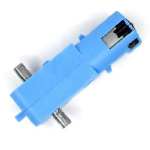

4 Reglamento del campeonato de seguidor de línea amateur.
4.1 DESCRIPCIÓN GENERAL
Diseñar y desarrollar un robot completamente autónomo, que sea capaz de recorrer un circuito de carreras formado por una línea negra en un fondo blanco. Gana el robot que complete el circuito en el menor tiempo posible.
4.2 IMPORTANTE!!
La organización es responsable de ofrecer una competencia justa y transparente con el uso de cronómetros de pista, los cuales estarán acoplados para medir el tiempo cuando el robot cruce la línea marcada o el sensor, de ser el caso. No se permiten sustancias pegajosas para mejorar la tracción. Los neumáticos y otros componentes del robot en contacto con la pista no deben poder levantar y sostener un papel A4 estándar (80 g/m2) durante más de cinco segundos.
4.3 CARACTERÍSTICAS TÉCNICAS DEL ROBOT
Las dimensiones del robot no podrán exceder 25 cm de ancho x 25 cm de largo de base; la altura del robot no está limitada. El peso máximo no está limitado. El accionamiento del robot se realizará mediante un activador IR o manual. Los robots no pueden tener partes en movimiento (como las ruedas) antes de la señal de salida.
4.4 MATERIALES:
El empleo de materiales en la estructura del robot y el número de motores es libre. El robot debe construirse con motores con caja de reducción amarilla o azul, sin modificaciones internas o externas. La alimentación eléctrica del robot será con pilas o baterías; está prohibido el uso de combustibles (motores de combustión) o cualquier material inflamable. Ningún robot deberá alimentarse en forma externa a través de cables.
| Motor Amarillo | Motor Azul |
|---|---|
 |
 |
4.5 LIMITACIONES
El único sistema de comunicación permitido con el robot es el de encendido y apagado por vía inalámbrica o un activador manual. El robot debe comportarse de forma completamente autónoma durante todo el recorrido. El robot deberá estar preparado para trabajar bajo condiciones de luz variadas. Se permitirá realizar un cambio al hardware o al software en los robots por los competidores solo al término de la primera ronda.
4.6 CARACTERÍSTICAS DEL ÁREA DE TRABAJO DEL ROBOT.
Las características de la pista se darán a conocer 5 días antes de la inauguración del evento a través de la página oficial del evento. En el inicio y el fin del recorrido estarán indicadas con líneas perpendiculares a la derecha con respecto de la línea de trayectoria, siguiendo el sentido del recorrido. Las características principales de la pista donde se realizará la competencia son las que se muestran a continuación: - La pista será de madera. - En la pista no habrá cruces de línea. La aproximación más cercana de la línea de curso a los bordes de la pista será de no menos de 15 cm, medidos desde el centro de la línea. No se garantiza una iluminación especial. Se recomienda a los participantes tener en cuenta cada aspecto de la pista para luego no tener ningún inconveniente; si resultase el caso de tener algún inconveniente, avisar a los respectivos jueces antes de la participación.
4.7 DESARROLLO DE LA COMPETENCIA.
Todos los seguidores de línea deberán tener sus baterías completamente cargadas antes de cada carrera; el tiempo de espera es de máximo 3 min para poder competir; si no, será descalificado inmediatamente.
El intento inicia en el momento en que el seguidor de línea cruce la línea de salida; en este momento se comenzará a tomar el tiempo de recorrido. El tiempo de recorrido será detenido cuando la parte delantera del robot toque la línea de meta; este tiempo será almacenado. Cada robot tendrá un tiempo máximo de 3 minutos para finalizar totalmente la pista. Así mismo, tendrá 2 oportunidades para lograr el objetivo; en caso de finalizar en las dos ocasiones la pista, se almacenará el menor tiempo realizado por el robot. El robot está obligado a permanecer dentro de la pista y seguir la trayectoria marcada durante toda la carrera. Si el vehículo se sale de la pista y vuelve de nuevo al mismo punto en la pista por sí mismo, puede continuar la carrera. Si el vehículo se sale de la pista completamente o permanece inmóvil durante 5 segundos, la carrera se dará por terminada inmediatamente. El operador del robot no podrá tocar al vehículo mientras este se encuentre haciendo la trayectoria; en caso de que esto suceda, el robot será descalificado. Solo podrá tocarlo cuando inicie o termine el recorrido. Si ninguno de los equipos puede completar la trayectoria, el ganador será determinado por la distancia recorrida en el menor tiempo.
4.8 Es OPCIÓN de la organización realizar la competencia en tres fases:
4.8.1 Primera fase:
La competencia se realizará primeramente de manera individual, es decir, un robot tendrá que realizar totalmente la trayectoria marcada; el tiempo mínimo de la mejor vuelta será almacenado. Todos los robots participantes ejecutarán esta acción; con ello se determinarán las posiciones para realizar las eliminatorias. Si es necesario, se eliminarán para esta primera fase a los robots con un tiempo mayor, tal que el número de participantes se reduzca a 5.
4.8.2 Segunda fase:
la competencia será considerada el mejor tiempo entre los finalistas. En caso de tener alguna duda sobre esta normativa, comunicarse con el comité organizador. “En caso de haber muchos competidores, se hará un análisis para determinar si se va a realizar la competencia en estas dos fases; caso contrario, se dará aviso en la página oficial del torneo cinco días antes del torneo”.
4.9 JUECES
La figura del juez o los jueces es importante en la competencia; él será el encargado de que las reglas y normas establecidas por el comité organizador en esta categoría sean cumplidas. Los jueces para esta competencia serán designados por el comité organizador. Los participantes pueden presentar sus objeciones al juez encargado de la categoría antes de que acabe la competencia.
4.10 TRANSITORIOS
De no contar con un mínimo de 3 robots o equipos participantes, la categoría será considerada únicamente como exhibición y solo se realizará la entrega de medallas. Todos aquellos sucesos que no se contemplen dentro del presente reglamento, durante la competencia, serán resueltos por el Comité Organizador en conjunto con los jueces. Las llaves de cada categoría serán presentadas posterior al cierre de inscripciones. Una vez realizada la inscripción del robot, no se realizarán devoluciones de dinero. Los distintivos de cada participante serán entregados durante el desarrollo del evento.
4.11 INSCRIBA SU SEGUIDOR DE LÍNEA AQUI